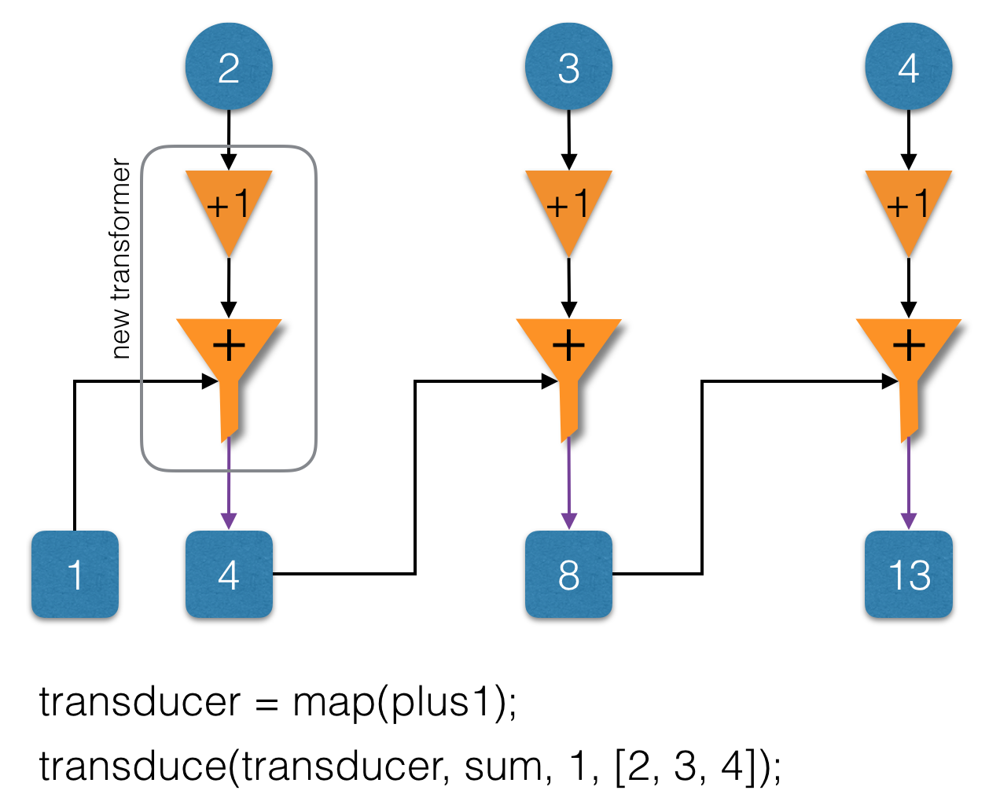
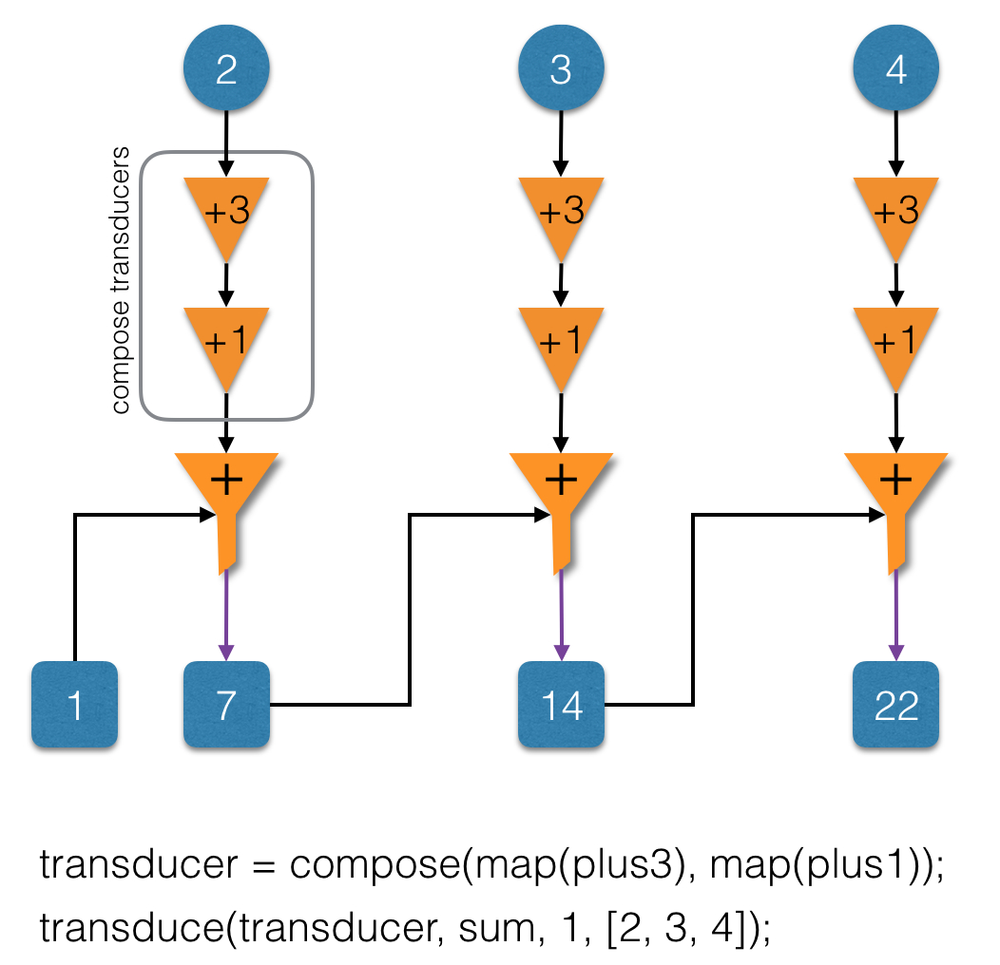

译者注：本文翻译自 Kevin Beaty 的《Transducers Explained: Part 1》, 转载请与原作者或本人联系。
对原文中出现的专业术语，在不妨碍理解的情况下采用原文单词。
Transduce 相较于 Reduce 的改进，用一句话概括：在使用 Reduce 对每个元素归并之前，先对取出的每个元素进行转换。
Transduce 的时间复杂度为 O(n), 传统 compose + reduce 的为O(mn)，m：compose 中包含 转变函数的个数，n：输入“数组”的长度。
名词解释：
-
reduce：归并、折叠。
-
reducer：用来进行 reduce 的二元函数。
-
result：reducer 的首个参数，累积值。
-
item：reducer 的第二个参数，reduce 数组遍历过程中的当前元素。
-
transduce：transform + reduce。
-
transducer：传入一个transformer，返回一个新的transformer。
-
transformer：在 reduce 过程中，对当前处理元素进行转换的对象，其中包含三个方法：
{ init, step, result } -
xf：reduce 函数的首个参数，可以是 reducer，也可以是 transformer。
-
stepper：等同于 reducer。
下面开始正文。
本文使用 JavaScript 对 transducers 原理进行剖析。首先介绍数组的 reducing(归并) 过程，并定义用于 数据转换 的 transformers；然后逐步引入 transducers，并将其用于 transduce 中。文末会有总结、展望、一些补充链接，以及当前涉及 transducer 的一些库。
Transducers…
什么是 Transducers ？
原文解释如下
Transducers 是可组合的算法变换。它们独立于输入和输出的上下文，并且作为一个独立的单元提供最基本的 转换(transformation)。由于 transducers 与输入和输出相解耦，所以它们可以用于许多不同的处理场景：collections, streams, channels, observables（集合、流、管道、观察者模式）等。Transducers 可以直接组合，与输入无关,且不会产生额外的中间变量。
嗯…
还是不太理解
我们来找一些相关的代码看看。当使用 transducers 时，所谓的 “算法变换” 就已经以函数的形式被定义好了（或至少部分定义好了）, transducer 类似于传入 reduce 的 reducer。Clojure 文档 将这些 “算法变换” 称为 reducing function。这又是什么东西？好吧…… ，让我们从 Array#reduce 函数开始讲解。首先来看看 MDN 的定义。
Reduce
reduce() 方法将一个二元函数，作用于一个累积值、以及数组中的每个元素（按从左到右的顺序）， 最终将数组 reduce（归并、折叠）成一个单值。
更多解释可以参考 MDN 文档（译者注：reduce 在某些语言中称为 foldl 左折叠，如 Haskell）。由于大家可能对 reduce 已经比较熟悉，这里将举几个例子来快速说明一下。
1 | const sum = (result, item) => result + item; |
上述代码中的 reducers 是 sum 和 mult。reducers 连同初始值：1，一起传入 reduce 中。“输入源” 是数组 [2, 3, 4]，“输出源” 是通过 reduce 内部实现创建的新数组。
关于 reduce， 有几个非常重要的点需要注意：
- 归并从输入的初始值开始。
- reducer 一次处理一个元素，操作过程如下：
- 使用传入
reduce的初始值作为第一步的累积值 - 当次操作的返回值作为下次操作的累积值
- 使用传入
- 将最后一次计算结果作为整体的返回值。
注意，在上述两例中，reducer 是一个二元函数。第一个参数为累积值，其值为由外部传入的初始值，或上次 reducer 的计算结果；第二个参数是在迭代过程中传入的单个元素。在本例中，reduce 对数组中的每个元素进行迭代，并进行归并处理。我们稍后会看到其他的迭代方式。我们使用 reducer 函数来描述 “转换的本质”。
Transformer
接下来，我们来明确 transformer 的归并过程：
1 | const createTransformer = reducer => ({ |
我们创建一个对象来封装 reducer，并将其命名为 step；该对象还包含另外两个函数：1. init 函数用于初始化 transformer，result 函数用于将最后一次计算结果转换为最终输出。注意，本文将只关注 step 函数，init 和 result 函数将在后续文章中做深入分析。现在，你可以把它们当作管理 “转换” 生命周期的方法：init 用于初始化，step 用于迭代，result 用于输出整个结果。
现在，我们来将刚定义的 transformer 运用到 reduce 中。
1 | const input = [2,3,4]; |
我们的最终目标是将 转换 与输入、输出解耦，所以我们将 reduce 定义为函数的形式。
1 | const reduce = (xf, init, input) => { |
为了使用 reduce ，我们向 reduce 传入 transformer、初始值和输入源。上述实现结合了 transformer 的 step 函数和数组的 reduce 函数，并将 step 函数的结果作为输出。这里的 reduce 内部实现仍然假设输入类型为数组。 稍后将去掉这个假设。
我们显式地向 reduce 传入一个初始值，其实本可以使用 transformer 的 init 函数提供初始值，但考虑到 reduce 函数的灵活性，需要能够自定义初始值。在实践中，transformer 的 init 函数仅在 reduce 未提供初始值的情况下使用。
新 reduce 函数的使用类似于之前的 reduce 。
1 | const input = [2,3,4]; |
若想要改变初始值，还可以显式地向 reduce 传入初始值。
1 | const input = [2,3,4]; |
reduce 函数现在需要一个 transformer。由于 transformer 的 init 函数未在 reduce 内部用到，且 result 通常是个恒等函数：一个直接返回输入本身的函数，我们将定义一个辅助函数，先将 reducer 转换为 transformer，然后将 transformer 传入 reduce 使用。
1 | const reduce = (xf, init, input) => { |
首先我们检查参数 xf 的类型是否为 function。若是，我们假定它是一个 reducer (step) 函数, 并调用 wrap 函数将其转换为 transformer。然后像之前一样调用 reduce 。
现在已经可以直接向 reduce 传递 reducer 了。
1 | const input = [2,3,4]; |

但我们仍然可以向 reduce 传 transformers。
1 | const input = [2,3,4]; |
注意，这里在外部使用 wrap 将已有的 reducer 转换为 transformer。这在使用 transducers 会经常碰到：开发者将转换定义为简单的函数，transducers 库会自动将将其转换为 transformer。
不一样的数组拷贝
目前，我们一直使用数字作为初始值和加法作为 reducer 。其实不一定非要这样，reduce 也可以将数组作为初始值。
1 | const append = (result, item) => result.push(item); |
我们定义了一个步进函数（stepper/reducer）append，用于将每个元素拷贝到新数组中，并返回该数组。借助 append， reduce 便可以创建一份数组的拷贝。
上述操作是否够酷？或许算不上…。当你在将元素拷贝到数组前，先对它变换一下，情况开始变得有趣起来。
最孤单的数字
（注：One is the loneliest number，一句英文歌词，引出 plus1 转换）
假设我们想让每个元素加1，定义一个加1函数。
1 | const plus1 = item => item + 1; |
使用上面的函数创建一个 transformer，在 transformer 的 step 中，会对每个元素进行转换。
1 | const xfplus1 = { |
我们来使用 transformer 输出每步的计算结果。
1 | const xf = xfplus1; |
我们使用一个 transformer 来遍历元素：将每个元素加 1 后，添加到输出数组中。
如果想计算数组元素加 1 后的总和，该怎么办呢？可以使用 reduce 。
1 | const output = reduce(sum, 0, output); |
上述方案虽然可行，但不幸的是，我们在获得最终答案的过程中，不得不创建一个中间数组。有更好的方案吗？
答案是有的。再来看下上面的 xfplus1 ，如果将 append 替换为 sum ，并且以 0 作为初始值，就可以定义一个直接对元素求和，但不会生成中间结果（数组）的 transformer。
但是，有时我们想立即查看替换 reducer 后的结果，因为涉及到的改变仅仅只是将 append 替换成了 sum。因此我们希望有一个能够创建 转换 的函数，该函数不依赖于用于组合结果的 transformer。
1 | const transducerPlus1 = (xf) => ({ |
该函数接受一个 transformer：xf，返回一个基于 xf 的新 transformer。新 transformer 将经过 plus1 转换的值传给 xf，相当于对 xf 进行代理。由于使用 step 函数可以完全定义这个转换，所以新 transformer 可以复用旧 transformer – xf 的 init 和 result 函数。新 transformer 每次对元素进行 plus1 转换后，利用转换的值对封装的 transformer 的 step 函数进行调用。
Transducer
我们刚刚创建了第一个 transducer：一个接受已有 transformer，返回新 transformer 的函数。transducer 会将一些额外的处理行为委托给新 transformer。
我们来尝试一下，使用刚才的 transducer 来重新实现前面的例子。
1 | const stepper = wrap(append); |
运行过程和结果与之前相同，很好。唯一的区别是 transformer：xf 的创建。我们使用 wrap 将 append 转换成名为 stepper 的 transformer，然后使用 transducer 封装这个 stepper 并返回一个 plus1 转换。然后我们就可以像从前一样使用转换函数：xf 对每个元素逐步操作，并得到结果。
中间辅助元素
从现在开始，事情变得有趣起来：我们可以用同一 transducer，仅在改变 stepper 和初始值的情况下，获得最终的累加和，而不需要中间辅助数组。
1 | const stepper = wrap(sum); |
不需要计算中间数组，一次遍历即可得到结果。sum 与 append 例子只有两处不同：
- 创建 stepper 时，用 sum 代替 append 进行封装。
- 初始值使用 0 代替 []。
仅此两处差异，其他完全一样。
需要注意的是，只有 stepper 转换知道 result 的数据类型。当封装 sum 时，result 的类型为数字，封装 append 时，result 的类型是数组。初始值类型与 stepper 的 result 参数类型相同。每次迭代元素的类型不限，因为 stepper 知道如何组合上次输出的结果和当前的元素，并返回一个新的组合的结果；本次输出结果可能会用于下次迭代中的组合，如此迭代循环。
这些特性允许我们定义独立于输出的转换。
可能会像 1 一样糟糕
(注：第二句歌词，Can be as bad as one，作者意思应该是，如果 plus2 还跟 plus1 一样从头重新实现一遍，就比较坑了)
假如我们想要 plus2，需要做哪些改变呢？我们可以像定义 transducerPlus1 那样，定义一个新的 transducerPlus2 。看看 transducerPlus1 是如何实现的，并决定做哪些改变。但这样做违反了 DRY 原则。
有更好的方案吗？
实际上，除了将 transformer 中 step 函数的值由 plus1 替换为 plus2 之外，其他的没变。
因此，可以将 plus1 提取出来，并将其作为 f 传进去。
1 | const map = f => xf => ({ |
我们定义了 mapping transducer，我们使用它来单步执行转换过程。
1 | const plus2 = input => input + 2; |
本例相较于之前 plus1 和 append 的例子，唯一的区别在于使用 map 创建 transducer。我们可以类似地使用 map(plus1) 来创建 plus1 transducer。transducerPlus1 虽然只是短暂的出现便被 map(plus1) 代替，但它对我们理解 transduce 的内部原理帮助很大。
Transduce
上面的例子讲解了如何使用 transducers 对一系列输入进行转换。我们来分解一下其中的步骤。
首先调用一个包含 stepper 转换的 transducer 来初始化转换，并定义 transduce 的初始值。
1 | const transducer = map(plus1); |
然后使用 xf.step 来单步处理每个元素。我们使用初始值作为传入 step 函数的第一个 result 参数，上一个 step 函数的返回值供后面的 step 函数迭代使用。
1 | let result = xf.step(init, 2); |
我们使用 xf.result 输出最终结果。
1 | const output = xf.result(result); |
可能你已经注意到了，这与上面定义的 reduce 实现非常相似。事实上确实是这样。我们可以将这个过程封装成一个新的函数 transduce。
1 | const transduce = (transducer, stepper, init, input) => { |
就像 reduce，我们需要确保 stepper 是一个 transformer。然后通过向 transducer 传入 stepper 来创建新的 transformer。 最后，我们使用包含新的 transformer 的 reduce 来进行迭代和转换数据。也就是说 transducer 的函数类型为：transformer -> transformer。
我们来实践一下。
1 | const transducer = map(plus1); |
上述两例的唯一区别是传递给 map 的函数不同。
我们来尝试一下不同的步进函数（step function）和初始值。
1 | const transducer = map(plus1); |

这里我们只是改变了 stepper 和初始值，便可以得到不同的结果。我们可以在不依赖中间结果的情况下，遍历一次便可求得累加和或乘积。
组合
如果我们想加3，该怎么办呢？我们可以定义 plus3 并且使用 map，但利用 transducers 的一个特性来进行优化。
事实上，可以通过已有的两个函数：plus1 和 plus2，来定义 plus3。
1 | const plus3 = item => puls2(plus1(item)); |
或许你已经看出来，其实这就是函数组合。让我们通过函数组合来重新定义 plus3。
1 | const compose2 = (fn1, fn2) => item => fn1(fn2(item)); |
compose2 用于组合两个函数，调用顺序从右向左，看一下 compose2 的实现就可以知道为什么调用顺序是从右向左的了。最后一个 function 接受传入参数，返回结果作为下个 function 的输入。如此迭代，直到输出结果。
让我们使用 compose2 来定义一个对每个迭代元素加 3 的 transducer，该 transducer 由 plus1 和 plus2 组合而成。
1 | const transducerPlus3 = map(compose2(plus1, plus2)); |
我们对已有的函数：plus1 和 plus2 进行组合，生成传入 map 的函数，而不是从头重新实现一遍 plus3。
为什么要告诉你上面这些呢？实际上，我们还可以通过组合其他的 transducers 来创建新的 transducers。
1 | const transducerPlus1 = map(plus1); |
新组合出来的 transducer 又可以用于组合其他的 transducer 。
1 | const transducerPlus1 = map(plus1); |

再次注意，这里与本节前面的例子的唯一区别仅仅在于 transducer 的创建，其它都一样。
之所以可以使用 组合，是因为 transducers 可以接受已有 transformer，返回新的 transformer。也即 transducer 的输入与输出类型相同，且为单输入单输出的函数。只要符合上述条件，便可以使用函数组合来创建接受相同类型参数的新函数。
由上可得，transducers 是一种 “可组合的算法变换”。这在实际开发中非常有用：可以将新的变换分解为一系列较小的变换，然后将它们通过 compose 或 pipe 以流水线（ pipeline）的组合起来。后面后有更多的例子进行演示。
事实上，虽然函数组合的顺序从右向左，而转换本身是自左向右的（译者注：这也是理解 transduce 的难点之一，理解了这个，也就基本理解了 transduce。可以通过单个 transducer 和 transformer 的组合，来理解转换的调用顺序。transduce 本质上做的事情是 在对每个元素进行归并之前先对其进行转换 ，将这句话在自己心里默念三遍：），这也是 transduce 区别于 reduce 的“唯一”不同点）。
在上面的 transducersPlus4 示例中，每个元素先进行 plus3 转换，然后进行 plus1 转换。
虽然在本例中 transducers 的调用顺序对结果没有影响，但是从左向右的变换顺序还是需要牢记在心。变换的调用顺序让你在阅读代码时更容易理解，因为它与你的阅读顺序是一致的。
part 1 总结
Transducers 将 “可组合的算法转换” 抽象出来，使其独立于输入、输出，甚至迭代的整个过程。
本文演示了如何使用 transducers 来抽象算法转换，transducer 将一个 transformer 转换为另一个 transformer。transformer 可以用于 transduce，进行迭代和转换输入源。
Underscore.js 或 Lo-Dash 在进行数组或对象计算时，往往会产生中间结果。而 transducers 以一系列函数的方式定义转换，类似于 reduce 的处理方式：将初始值作为首次迭代的累积值，使用累积值和当前元素进行计算，返回转换后的累积值，并将其作为下次迭代的累积值参数。一旦将这些转换从数据中抽象出来，就可以将相同的转换应用于不同的处理过程，这些处理过程以某个初始的累积值开始，不断对变换后的元素累积。
我们已经展示了同一 transducer 可以应用于不同的 “输出源”，只需改变初始累积值和 reducer 函数。这种抽象的好处之一为：可以只通过一轮计算便得到结果，且不会产生中间辅助数组。
尽管没有明确说明，我们还是展示了 transducer 是与迭代过程及输入源解耦的。在迭代过程中，我们使用相同的 transducer 对元素进行转换，并将转换结果传给 step 函数，并且使用数组的 reduce 从数组中拉取待处理的数据元素。
还想了解更多！
看这里 ，之后的文章中将会在本文基础上探讨更多主题，例如：transducers 并不一定需要每步都输出元素；并且迭代过程可以提前终止，并返回终止前已经归并的结果。本文只讨论了 step，未讨论 init 和 result，将来也会进行补充。
我们还将会学习到，输入源可以是任意产生一系列值的模型：惰性列表，不确定的序列生成器，CSP（通信顺序进程），Node.js streams
lazy lists, indefinite sequence generation, CSP[http://phuu.net/2014/08/31/csp-and-transducers.html), [push streams][12], Node.js streams, iterators, generators, immutable-js data structures, 等等。
等不及了！
在此期间，可以看看 Clojure文档, 或者看看 这个视频 或 这篇文章。其他更多更好的介绍，可以自行 Google 。
想要立刻实践一下？已经有三个库实现了相似的API：transducers-js、transducers.js、ramda(译者注：ramda 中 transducer 部分也是本文作者写的）。本文是按照 transducers-js 的实现进行讲解和演示的，但这些概念同样适用于 transducers.js。
Underscore.js 的爱好者？可以查看 underarm，基于 transduce 库（译者注：本文作者写的库）写的。
怎样将 transducer 应用到 Node.js streams 中呢？我们还在探索。
希望得到新文章的通知？可以在 Twitter 上关注 simplectic。